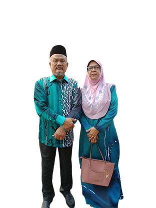
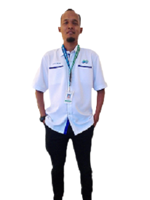
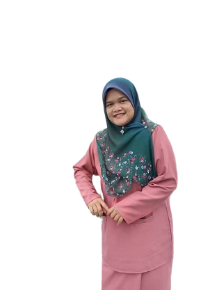
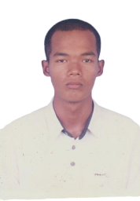
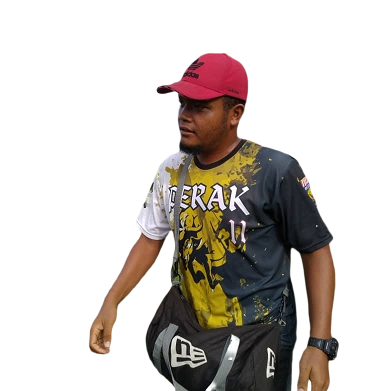

|  | My Father My father named SUFFAR RUDDIN BIN OMAR is 60 years old. Born on 31 July 1960 in Kampung Sama Gagah Selinsing, Perak. He married at the age of 21 and had retired as a soldier in 2000. My father was the third child of five siblings. He is a hard worker and still strong enough to do various jobs such as catering, business, contractor, and others. We call it "Abah". He is also the person who is most worried about his children and grandchildren. My other friends say that my father has a fierce character but his kids only know how his real character is. My Mother My mother named HAMIDAH BINTI OSMAN is 56 years old. Born on 10 June 1964 in Kampung Gunung Semanggol, Perak. She was married at the age of 17 and was a housewife. My mother is the sixth child of seven siblings. She is a diligent cook, home decorator and other occupations such as catering, business. We call her "Mak" or "Mama". She is a person who does not give up to encourage and advise her children. My other friends and who known her are happy with my mother's friendly, joking and kind-hearted character. |
 | My Eldest Brother My eldest brother is SAIFUL HELMI and is 38 years old. He was born on 5 April 1982, in Kampung Gunung Semanggol, Perak. He completed his Bachelor's Degree at UUM. He works at JPS Perak. He was married to his wife named Norsuhana Ismail in 2008 and has three children. The first child is named Muhammad Syazwan who is 11 years old. The second child is Safiya Dayana who is 9 years old and his youngest child Muhammad Salman Faris is 3 years old. He is very committed and assertive in every job and is skilled in decorating the house as well as caring about his siblings. |
 | My Sister The second is my sister. My sister's name is SUHAIDA HERNI. She is 36 years old. She was born on 19 February 1984 in Sabah. Her job is as a lecturer in business at UiTM. My sister is a person who is interested in learning and very efficient in doing all the work. In 2019, my sister successfully completed her Ph.D. in the tourism business at USM. She is a loyal listener to my problems and always gives me the motivation to continue to succeed. Her success gave me the motivation to keep fighting in lessons and my future. |
 | My Second Brother (1989-2009) My second brother is named SHAHRUL HIZAM who was born on 26 September 1989 in Seremban, Negeri Sembilan. His job was to inherit my father as a soldier. He had Leukemia and left his family in 2009 when he was 20 years old. He was a very loving brother, a hardworking person in helping his parents, and loving his sibling. Yes, I really miss his laughter and attitude. |
 | My Third Brother My third brother named AHMAD SALIHIN was born in Kuala Kangsar, Perak on April 10, 1995. He is 25 years old. He completed his Diploma in Telecommunication Engineering at MMC Taiping, Perak in 2016. Before the COVID-19 pandemic spread, my brother was a coach for the softball team for his own club and other schools. His current job is as an internet installer working with Syarikat TM Berhad. He is a funny brother, hardworking, active and loves to help people. |